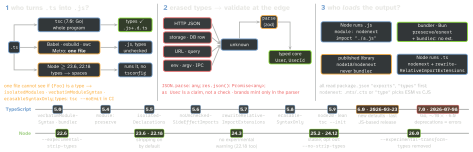

typescript · folio
In one line: Types are erased: tsc proves consistency inside the program,
nothing checks the data that enters it. The config decides how strict the proof is, how imports
resolve for whoever loads the output, and which syntax a per-file transpiler or Node can
strip. Since July 2026 tsc is the native Go port (TypeScript 7); 6.0 was the
last JavaScript-based release.
Download PDF Print view LaTeX source


Defaults: 5.9 → 6.0 (and 7.0)
| option | ≤ 5.9 | 6.0 · 7.0 |
|---|---|---|
strict | false | true |
module | commonjs | esnext |
target | es5 | latest spec: es2025 |
types | every @types/* | [] — list them |
rootDir | common dir of inputs | the tsconfig’s dir |
noUncheckedSideEffectImports | false | true |
libReplacement | true | false |
stableTypeOrdering | — | opt-in, ∼25 % slower · 7.0: always |
Deprecated in 6.0 (silence: "ignoreDeprecations": "6.0"), hard errors in
7.0: target: es5, downlevelIteration, moduleResolution: node/node10/classic, module: amd/umd/system/none, outFile, baseUrl (write the prefix into each paths entry), esModuleInterop or allowSyntheticDefaultImports: false, alwaysStrict: false, the module keyword for namespaces, import … assert (use with), /// <reference no-default-lib>.
Strict, and beyond strict
strict=alwaysStrict,strictNullChecks,strictFunctionTypes,strictBindCallApply,strictPropertyInitialization,noImplicitAny,noImplicitThis,useUnknownInCatchVariables(4.4:catch (e)isunknown),strictBuiltinIteratorReturn(5.6: built-in iterators returnundefined, notany). New members join on upgrade — pin the TS version.- Not in strict:
noUncheckedIndexedAccess(4.1,a[i]:T|undefined),exactOptionalPropertyTypes(4.4),noImplicitOverride(4.3),noPropertyAccessFromIndexSignature(4.2),noImplicitReturns,noFallthroughCasesInSwitch,noUnusedLocals/Parameters. - 5.9
tsc --initturns on the first two above, plusnodenext,verbatimModuleSyntax,isolatedModules,moduleDetection: force,skipLibCheck,declaration,types: []. extendstakes an array (5.0; later wins);${configDir}in path options (5.5) = the directory of the config that is compiled, not of the shared base.- JS in the program:
allowJsmixes.jsin;checkJsor a per-file// @ts-checkchecks it from JSDoc,// @ts-nocheckopts a file out.
Modules — match the loader
nodenext:.mtsESM ·.ctsCJS ·.tsfollows the nearest"type". ESM relative imports name the output:"./mod.js". Default import of CJS =module.exports. ImpliesesModuleInteropand floatingtarget: esnext; allowsrequire(esm)(5.8, Node 22.12+). Frozen snapshots:node18(5.8, norequire(esm)),node20(5.9, implieses2023).bundler(5.0): extensionless, reads"exports"with theimportcondition.module: preserve(5.4) implies it, plusesModuleInteropandresolveJsonModule; emitsimportas written,import x = require()asrequire. App recipe:esnext+bundler,noEmit,allowImportingTsExtensions(only withnoEmit/emitDeclarationOnly),verbatimModuleSyntax; no"type": "module"or.mtsin bundler projects.- Library:
node18, the lowesttargetyou support,strict(or its.d.tsbreaks strict users),declaration+declarationMap,rootDir/outDir(else users load your.ts).bundlerresolution is “infectious”: it accepts imports Node cannot load. "exports": TS takes"types"first, thendefault/runtime conditions; add your own withcustomConditions.pathsonly tells TS —tscnever rewrites them, so the bundler / Jest / Node ("imports") needs the same map.
Enums vs unions
Numeric enum = runtime object + reverse map (E[0] is "A"); string enums have none. const enum is inlined: ambient ones break isolatedModules and inline a stale value when the library version changes (handbook: lint them away or preserveConstEnums). Neither survives erasableSyntaxOnly — use an as const object or a literal union.
Erasable TypeScript
isolatedModules: errors where one file is not enough — a type re-exported withoutexport type, a namespace in a script file, an ambientconst enum.verbatimModuleSyntax(5.0, below): replacedimportsNotUsedAsValuesandpreserveValueImports(gone in 5.5); CJS output needsimport x = require().erasableSyntaxOnly(5.8) bans what has runtime meaning:enum, namespaces with code, parameter properties,import =/export =.- Node swaps types for spaces (lines hold, no source map), ignores
tsconfig, needs extensions andimport type; no.tsx, no.tsinnode_modules. Its docs: panel 3 +verbatimModuleSyntax,erasableSyntaxOnly,target: esnext,noEmit. rewriteRelativeImportExtensions(5.7):./a.ts→./a.js— relative literals only; neverpathsaliases, packages,#/…, computedimport().
import type { A } from "a"; // erased entirely
import { b, type c } from "bcd"; // -> import { b } from "bcd";
import { type x } from "xyz"; // -> import {} from "xyz";TypeScript 7 — the native compiler
npm i -D typescript= 7.0.2, stilltsc: VS Code 125.7 s → 10.6 s (11.9×), memory -6 to -26 %;--checkers N(4),--builders N,--singleThreaded.- No API in 7.0 (7.1: a new, different one): typed lint rules, webpack loaders, Vue / Svelte / Astro / MDX, Angular templates stay on 6 —
@typescript/typescript6shipstsc6+ the 6.0 API. - Clean on 6.0 with
stableTypeOrdering, noignoreDeprecations⇒ should compile identically on 7.0. JSDoc:@enumignored, values not usable as types.
References, declarations, speed
composite:declarationon,rootDir= its dir, every file ininclude; importers read its.d.ts.tsc -bbuilds stale projects in order (.tsbuildinfo); since 5.6 past errors (--stopOnBuildErrors).isolatedDeclarations(5.5): exports fully annotated, so any tool emits.d.tsper file, in parallel;--noCheck(5.6) emits without checking.- Cost: interfaces over big
&(cached); annotated returns; unions past a dozen members compare pairwise. Measure:--extendedDiagnostics,--explainFiles,--generateTrace+@typescript/analyze-trace.
Example — the edges
const User = z.object({ id: z.string(), age: z.number() });
type User = z.infer<typeof User>; // one source of truth
async function load(res: Response): Promise<User> {
return User.parse(await res.json()); } // throws ZodError
declare const tag: unique symbol; // brand: nominal, 0 bytes
type UserId = string & { readonly [tag]: 'UserId' };
const Dir = { Up: 'up', Down: 'down' } as const; // not enum
type Dir = (typeof Dir)[keyof typeof Dir]; // 'up' | 'down'
// globals.d.ts -- has export: a module, so this augments
export {}; declare global { var __APP_VERSION__: string }
// assets.d.ts -- no import/export: a script, ambient modules
declare module '*.css' {} // side-effect imports passTraps
- 6.0
types: []:describe,process,fsvanish — list"types": ["node", "jest"].rootDir=.: output lands indist/src/unless"rootDir": "./src". declare module "x"in a file that has any import/export is an augmentation, not a declaration — one stray import turns a shim into a patch.@ts-ignorehides every future error on its line;@ts-expect-error(3.9) fails with Unused ’@ts-expect-error’ directive. once fixed. typescript-eslintban-ts-comment: ignore banned, expect-error needs a ≥3-char reason.